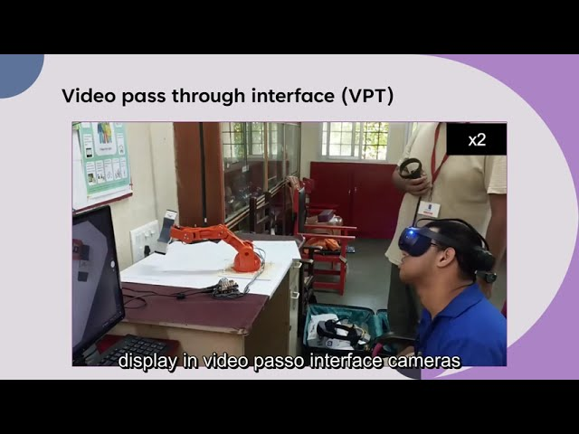
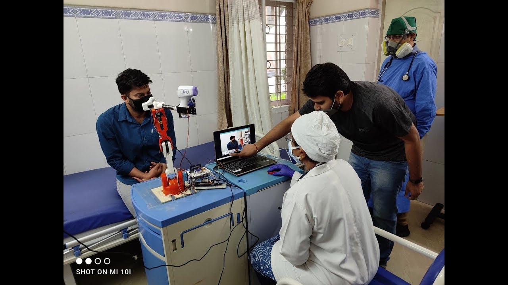
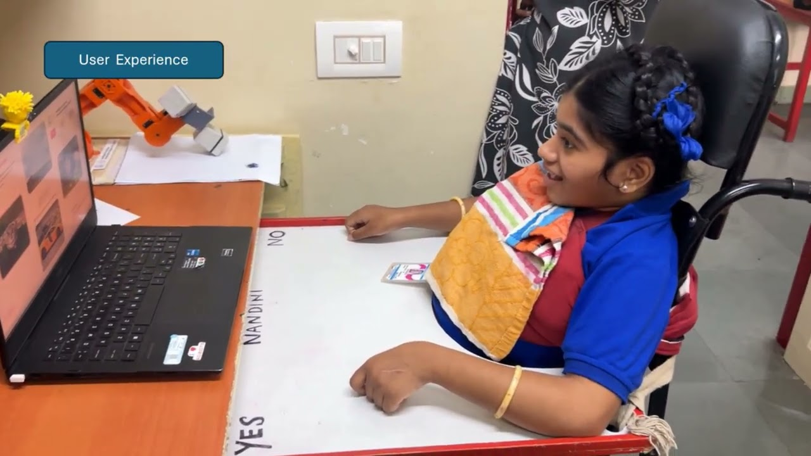
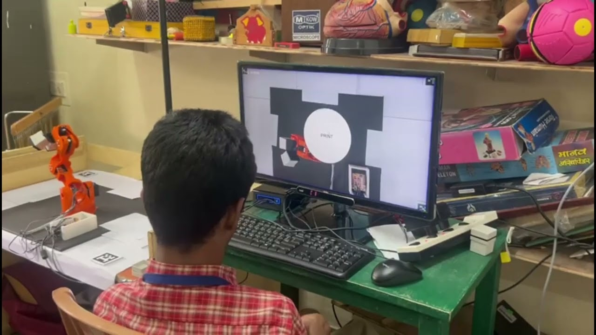
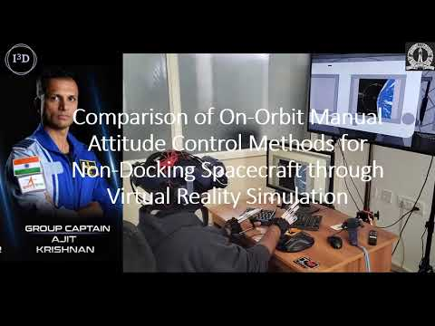
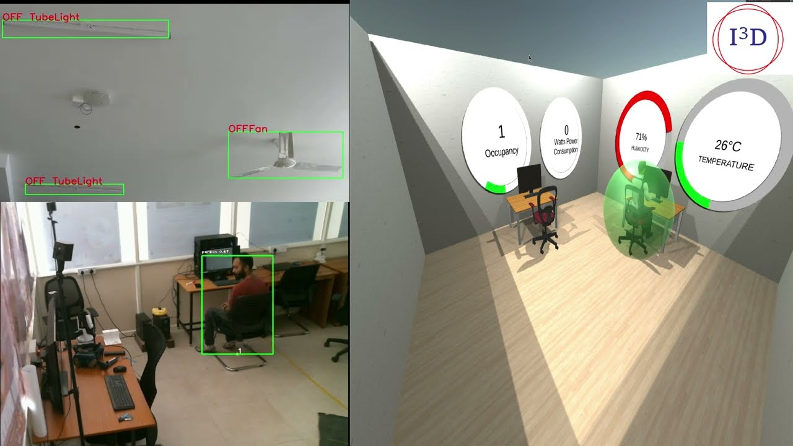
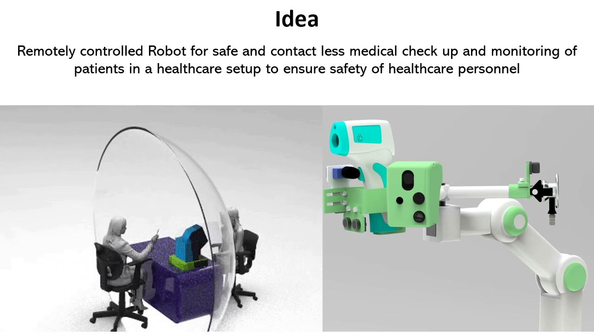

Projects
Research and design projects. Click a picture to watch the project video.
Research Projects





Autostereoscopic and Multi-Layer 3D Displays
Array (Q1), 2026 · 2 patents filedA critical review of autostereoscopic 3D display architectures, plus an interactive four-view autostereoscopic display and a collaborative multi-layer display system.

Collaborative Robot for Healthcare
Finalist, Robot Design Competition, ICSR 2021A safe, collaborative robot for healthcare settings, selected as a finalist at the 13th International Conference on Social Robotics.
Competition → Video →Design Projects
Smart Sanitizer Dispenser (MOYA)
Product design of a smart sanitizer dispenser.
Eye Gaze Movement Observation
An eye-tracking study of gaze movement using a Tobii eye tracker.